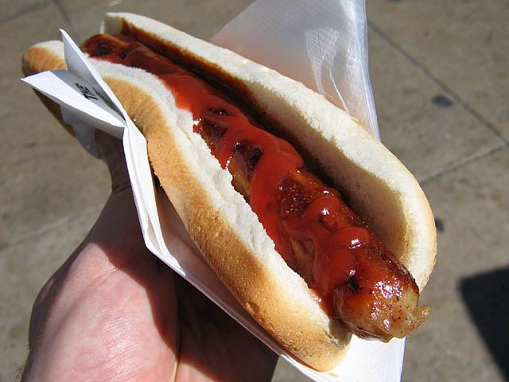

Hot Dog

Description:
A frankfurter, especially one served hot in a long, soft roll and topped with various condiments.
Ingredients:
- 1 pound ground beef
- ⅔ cup finely chopped onion, divided
- 1 (15 ounce) can tomato sauce
- etc.
Steps:
- Brown ground beef and 1/3 cup onion in a large skillet over medium heat, until the meat is no longer pink, 5 to 7 minutes. Drain, and return the skillet to the stove.
- Stir tomato sauce and ketchup into the ground beef mixture. Add chili powder, vinegar, garlic powder, hot sauce, salt, and pepper; stir until well combined. Reduce heat to low and simmer uncovered until sauce has thickened, 8 to 10 minutes. If sauce gets too thick, add water to thin it out.
- Meanwhile steam or simmer hot dogs in hot water until hot.
- etc.